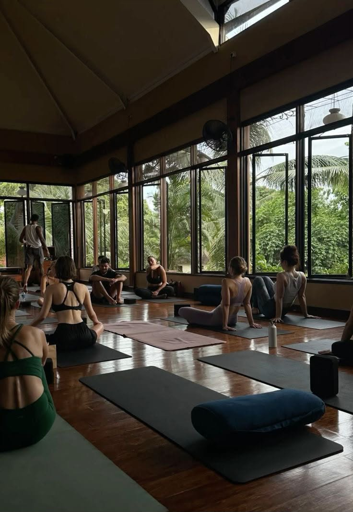
Две практики йоги
Вечерняя практика инь-йоги, чтобы полностью расслабиться и отпустить напряжение дня. И мягкая утренняя практика, чтобы проснуться без спешки. Подходит для любого уровня.
Wellness-ретрит · 21–22 ноября · Хойан
Настоящее восстановление вместо очередного выходного с ноутбуком. 2 дня, чтобы выдохнуть, замедлиться и побыть в компании людей, с которыми есть о чём поговорить. Йога, Sound Healing и вилла у реки с бассейном.
Количество мест специально ограничено. У нас небольшая группа, поэтому мы знакомимся с каждым(ой) лично
где многие мечтают оказаться. А выходные проходят за ноутбуком, в делах и с ощущением, что вы опять не отдохнули.
просто ничего не делать: без чувства вины и без телефона в руке.
и вместе с ним оставили свой круг. Старые друзья далеко, а новые знакомые — это пара встреч до следующего переезда.
с людьми, которым не нужно объяснять, почему вы здесь и чем занимаетесь. Но на мероприятия вы ходите неохотно: вдруг придёте, а там разговоры ни о чём, никому ничего не интересно, и домой вернётесь более одиноким(ой), чем пришли.
кто сам строит свою жизнь: работает, учится, запускает проекты, переехал(а) в другую страну. Но найти людей на своей волне оказалось сложнее, чем найти жильё или визу.
чтобы это изменить: красивейшая вилла у реки, мягкие практики, свободное время и группа людей, с которыми есть о чём поговорить.
И вилла — это прекрасно. Но главное на этом ретрите — люди.
Практики мягкие, опыт не нужен. Свободного времени у нас не меньше, чем программы.

Вечерняя практика инь-йоги, чтобы полностью расслабиться и отпустить напряжение дня. И мягкая утренняя практика, чтобы проснуться без спешки. Подходит для любого уровня.
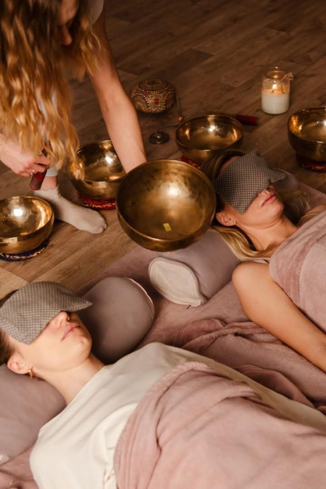
Час глубокого расслабления под звуки поющих чаш. Вы просто лежите, слушаете и даёте нервной системе выдохнуть.
Медитация-визуализация и письменная практика. Наш мозг формирует привычные мысли и образ себя, а значит, меняться проще, когда ясно видишь, куда хочешь прийти.
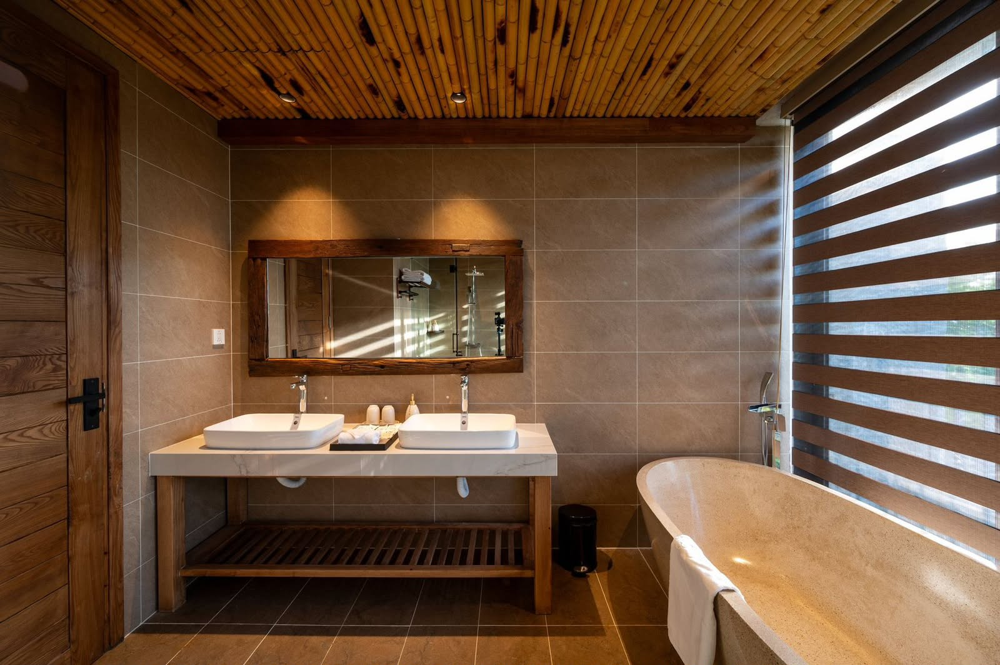
Эстетичная вилла для вашего контента, бассейн, река. И никаких посторонних.
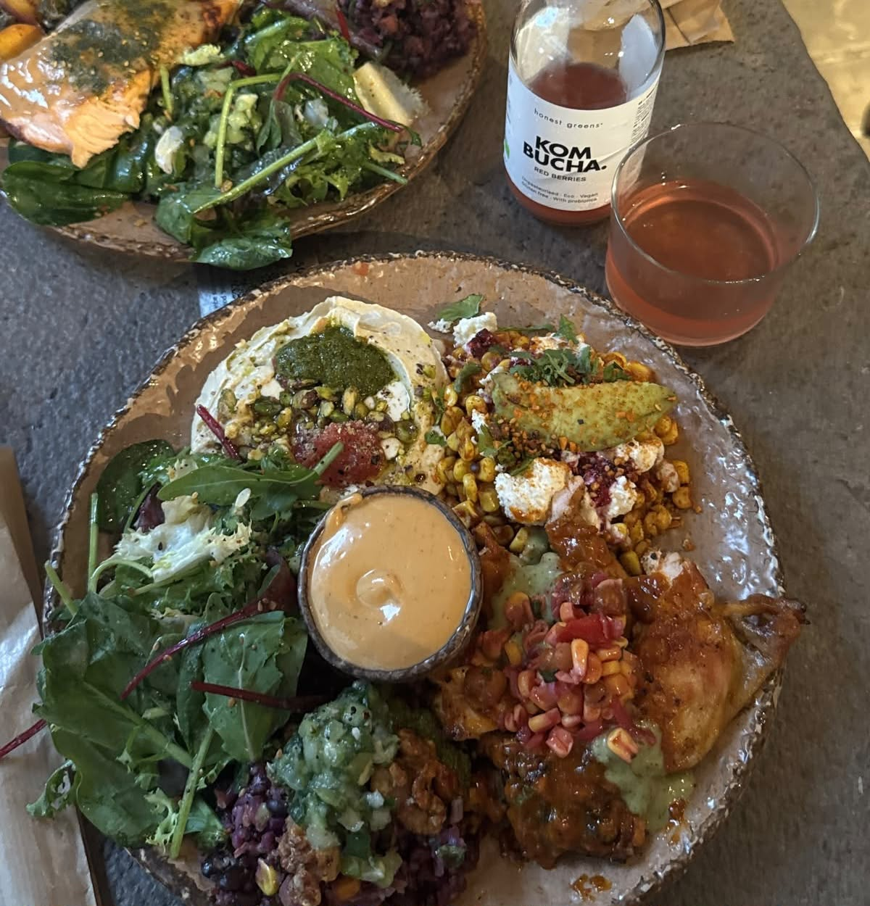
Полезный полноценный ужин и завтрак, а также фрукты, чай и лёгкие перекусы. Блюда вы выбираете заранее.
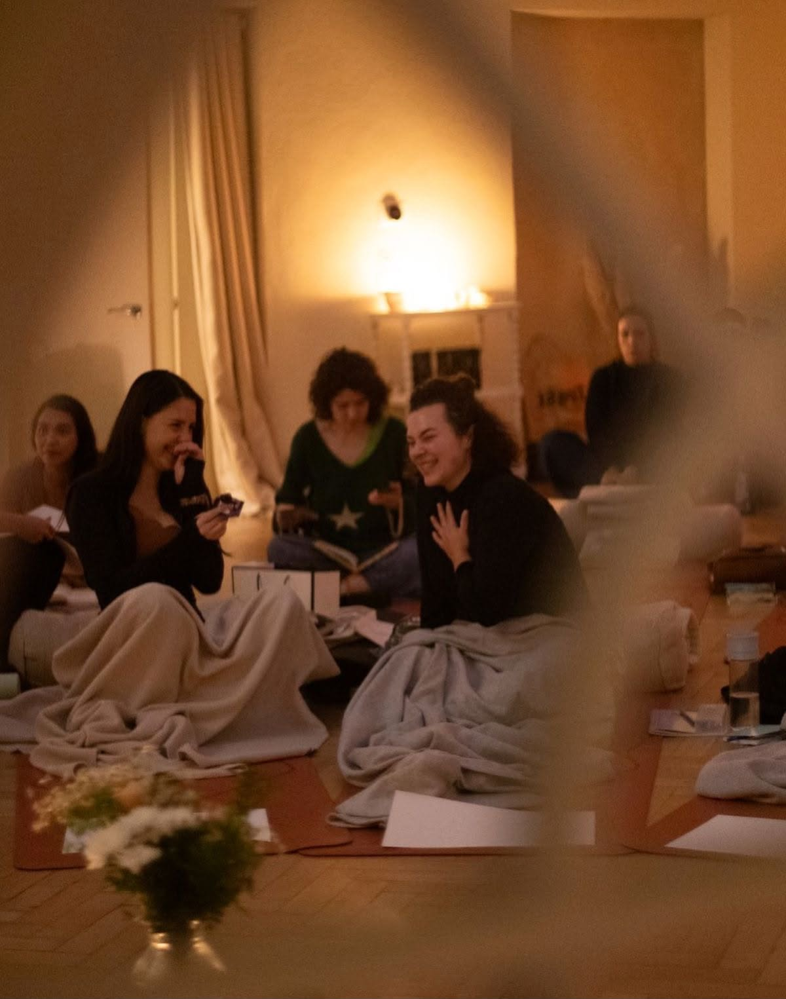
Бассейн, веранда, долгие вечерние беседы. Никакого расписания на каждую минуту. Программа составлена так, чтобы у вас было свободное время для созерцания и новых тёплых знакомств.
Никаких «чем занимаетесь?» по кругу, визиток и необходимости показывать себя с лучшей стороны.
Любую практику можно пропустить и просто полежать у бассейна.
Делиться или молчать, решаете вы. К нам приходят и скромные ребята, так что активничать можно в меру своего комфорта.
Количество мест ограничено до небольшой комфортной группы.
А будет вилла у реки, мягкие практики и люди, с которыми легко.
Без спешки, с балансом практик и свободного времени
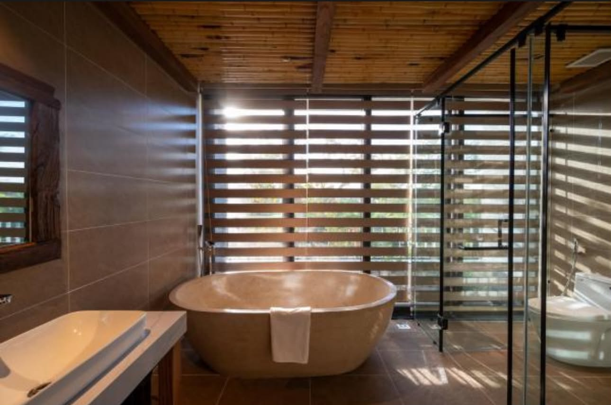
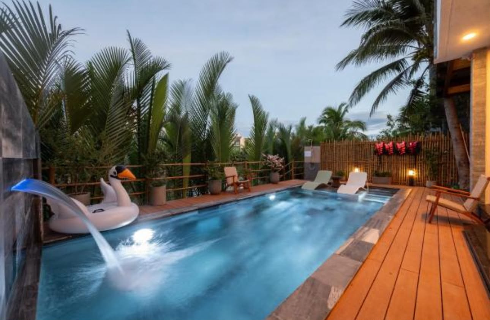
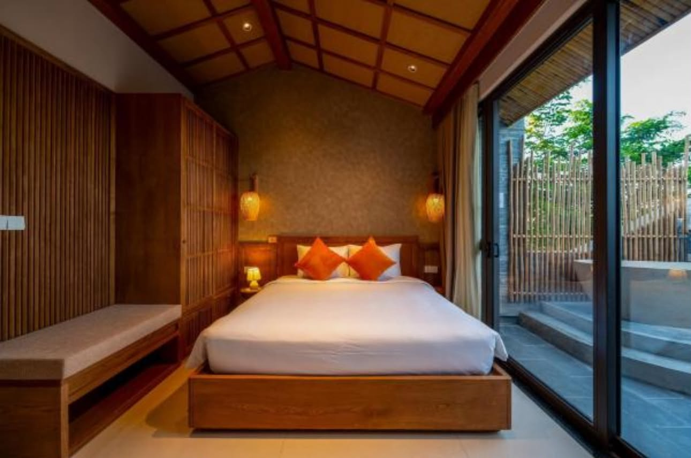
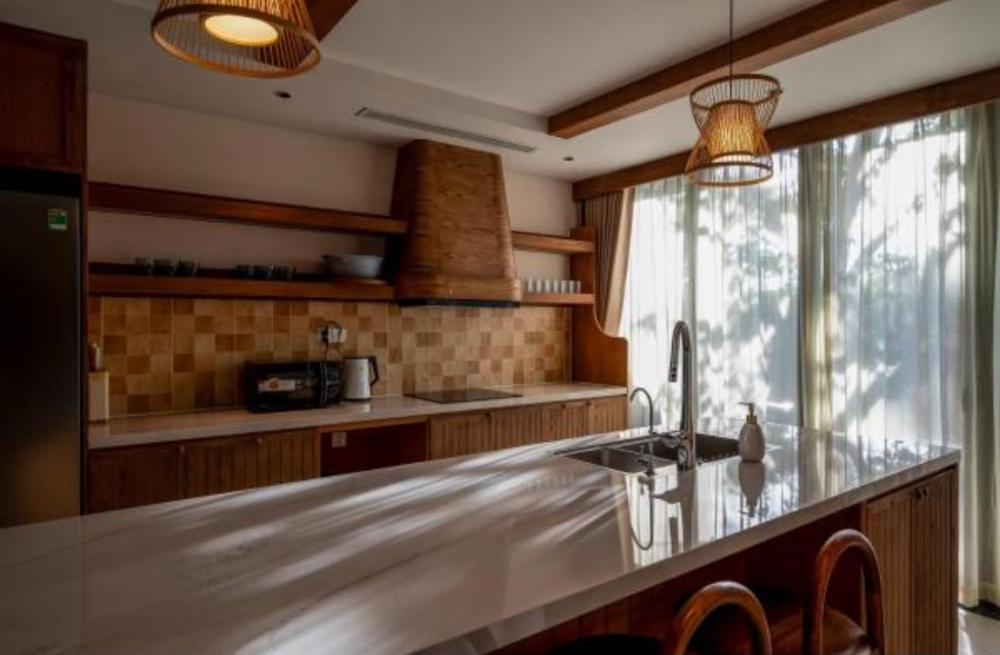
Тихая вилла на реке Ко Ко, в районе Хойана, где нет туристической суеты. Вилла целиком наша на два дня: никаких посторонних, и мы никому не мешаем.
Как добраться: до Старого города около 15 минут на машине, до аэропорта Дананга около 47 минут. Точный адрес и геолокацию отправим после брони.
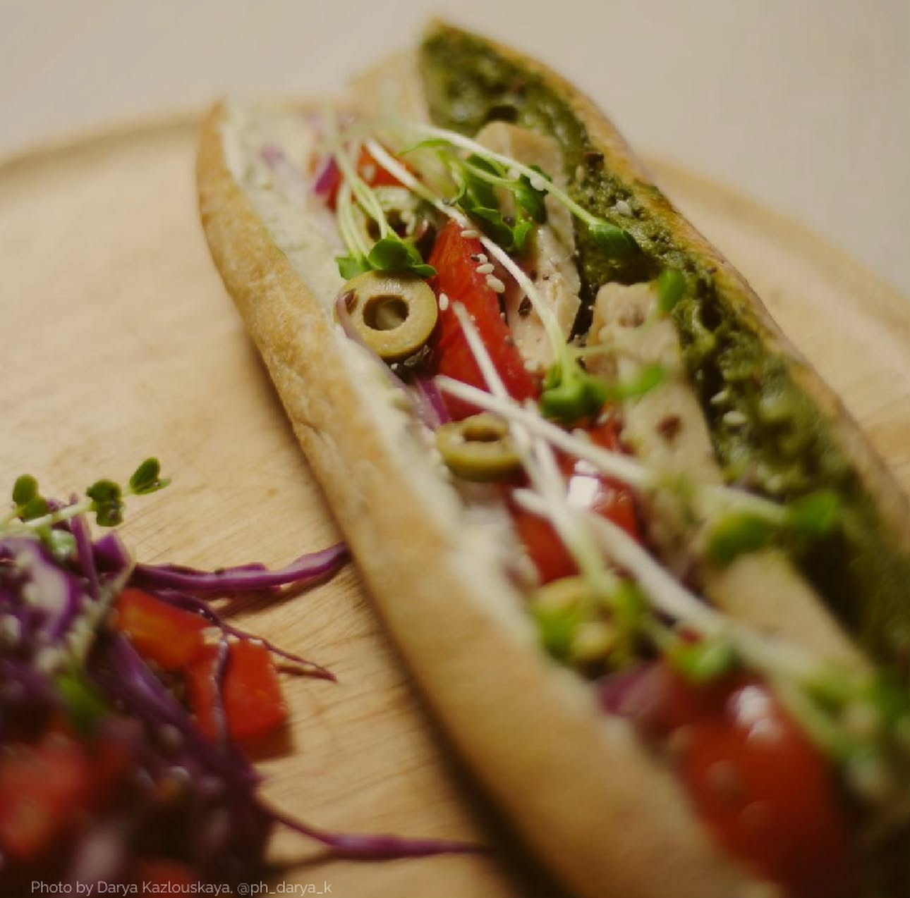
Kurumi — 100% веганский ресторан в Хойане и Дананге. Меню от боулов и панкейков до сытной домашней кухни, так что никто не останется голодным.
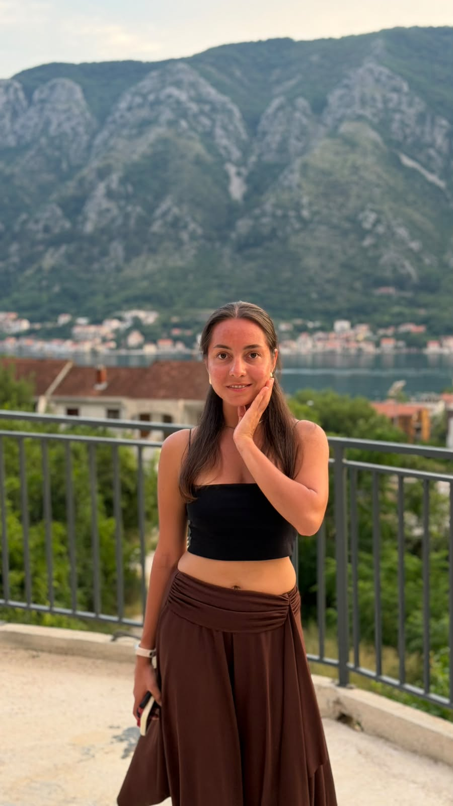
Алия веб-дизайнер и вместе с Викой ведёт воркшопы.
Мы познакомились в Далате: обе были в эмиграции и обе искали своих людей. Нашли друг друга и поняли, что хотим, чтобы так же друг друга находили и другие люди.
Мы проводим воркшопы в Дананге. Люди знакомятся, остаются на связи, и случайные встречи превращаются в дружбу. Одна из участниц как-то призналась, что два года в Дананге не ходила ни на какие мероприятия: боялась, что придёт, а там разговоры только о парнях и ни одного человека, с кем интересно. К нам приходят другие люди: деятельные, любопытные, с проектами и планами. Видимо, мы притягиваем именно таких.
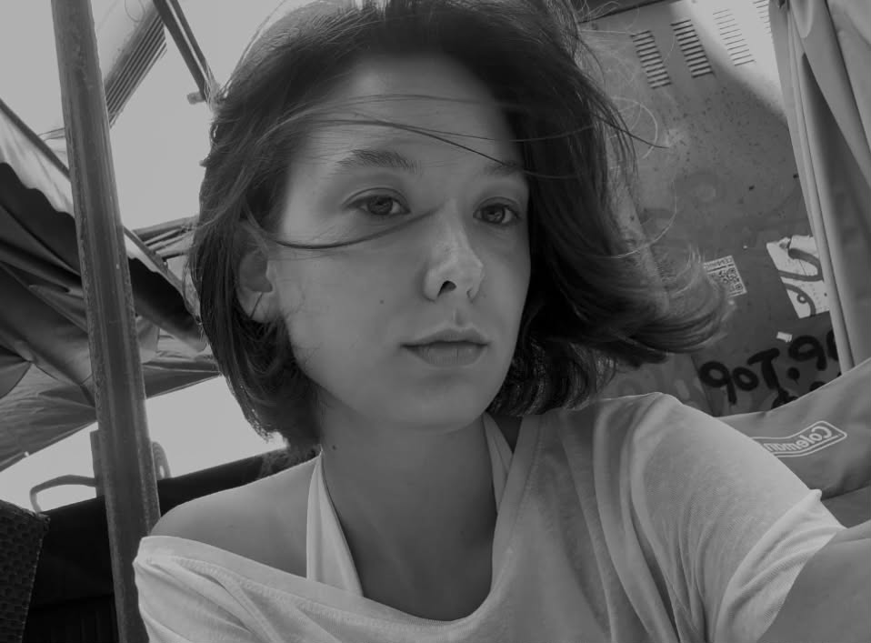
Вика проводит воркшопы, занимается йогой и серфингом.
Ретрит — наш следующий шаг: два дня, чтобы познакомиться и провести время вместе без спешки. Наша цель простая: собирать классных людей в одном месте, чтобы никому больше не приходилось искать своих в одиночку.
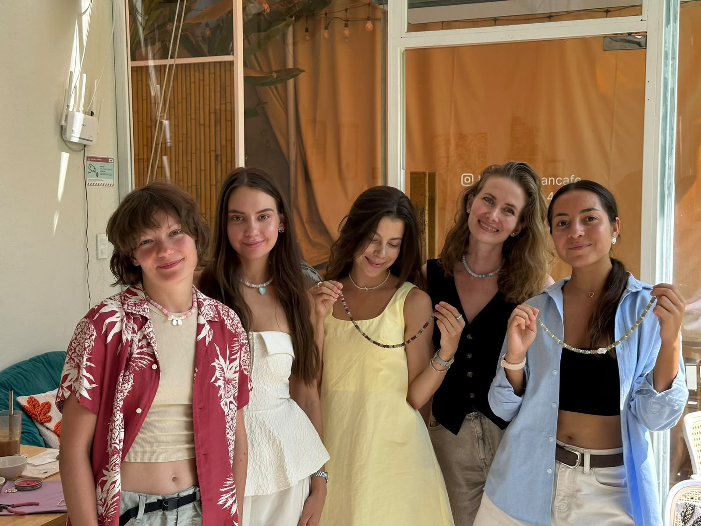
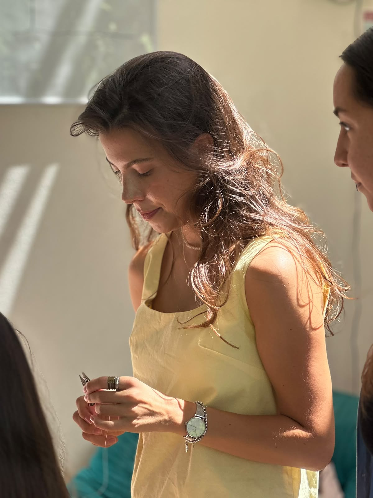
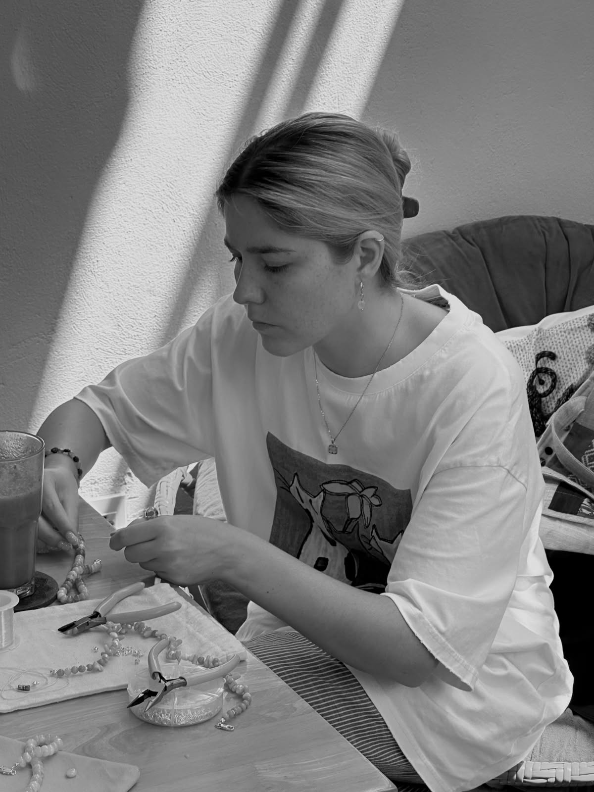
Еду один(а)
3 900 000 ₫Приезжаем вдвоём (+1: с другом, подругой или партнёром)
3 700 000 ₫с человека
Да, так приезжает большинство. Группа маленькая, а программа устроена так, чтобы знакомиться без неловкости: вместе едим, занимаемся и разговариваем. Многие участники наших воркшопов уже подружились.
Да. Обе практики мягкие и подходят для любого уровня. Опыт не нужен, а если что-то не получается, можно просто отдохнуть.
Мы собираем группу небольшую и внимательную: сначала знакомимся в переписке и просим заполнить короткую анкету. Это не экзамен, нам просто важно, чтобы вам с группой было хорошо.
Вилла находится в районе Casamia, в нескольких минутах от пляжа Куадай и около 15 минут на машине от Старого города Хойана. От аэропорта Дананга ехать около 47 минут. Адрес отправим после брони, а в чате группы можно договориться ехать вместе.
Купальник, удобную одежду для йоги, лёгкую кофту на вечер, средство от комаров (рядом река), паспорт для регистрации на вилле и всё, что нужно лично вам.
Kurumi — полностью веганский ресторан, так что вегетарианцам и веганам здесь проще всего. Блюда вы выбираете заранее в форме, туда же пишете про аллергии и непереносимости.
Ноябрь в Хойане может быть дождливым, поэтому практики проходят под крышей. Если планы изменятся, мы предупредим заранее.
Предоплата не возвращается, потому что мы заранее бронируем виллу и еду. Но вы можете передать место другу или подруге.
Напишите нам в Telegram или WhatsApp. Мы пришлём короткую анкету, расскажем детали и забронируем место после предоплаты.
Если вы дочитали до этого места, возможно, вам это правда нужно. Напишите нам, и мы пришлём короткую анкету. Это не экзамен: нам просто интересно узнать вас и сложить группу так, чтобы всем было хорошо. Отвечаем лично и честно, подходит ли вам этот формат.